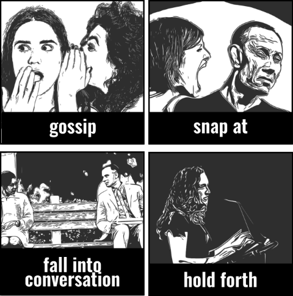

LOW VOICE mutter: angry or complaining in a low voice which is difficult to hear. whisper: quietly using breath. murmur: low, soft, continuous sound. murmur at / against: complain in private. grumble: complain in a quiet and tempered way.
CONVERSATION have a talk about = to have a word with. talk turkey: seriously, honestly (sth that needs to be agreed - esp. business) talk shops: talk about work on social occasions. to have a heart to heart with: private, with a friend, honestly about sth personal. chat: informally, friendly about unimportant things. “Chat with / to sb. Chat about. To have a chat with.” converse: to have a conversation. get / fall into conversation: talk with a stranger esp. by chance. gas: chat but in group for a long time about things that are not important. make conversation: make an effort to have a conversation. Just to seem friendly. chatter: (a group of people) together, quickly, in a friendly way about unimportant things. chatter away: continuously. gossip: reports about other people’s private lives that might be unkind, disapproving, or not true. talk: you say others “talk” meaning they gossip. jaw: talk. go / keep on (at sb) about sth: keep talking, complaining in an annoying way.
ANGRILY snap at: in a quick angry way. yell: shout with fear, anger or excitement. shout: utter a loud call or cry, typically as an expression of a strong emotion. bowl: speak angrily.
UNCLEARLY ramble: for too long in a confusing way changing the topic and forgetting what you’ve already said. waffle: for too long without saying anything important. gabble: too quickly. People don’t understand what you’re saying.
TO ARGUE A POINT discuss: exchange ideas and opinions about a subject or situation. labour the point: express the same idea again and again trying to be clear but being just boring. hold forth: loudly and confidently, to a group of people, giving your opinion. Or telling a story in an annoying way.